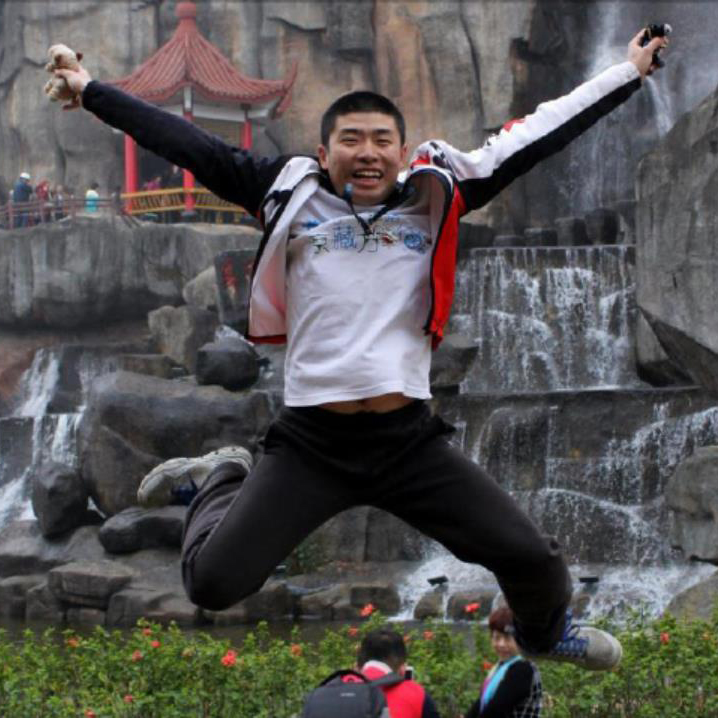
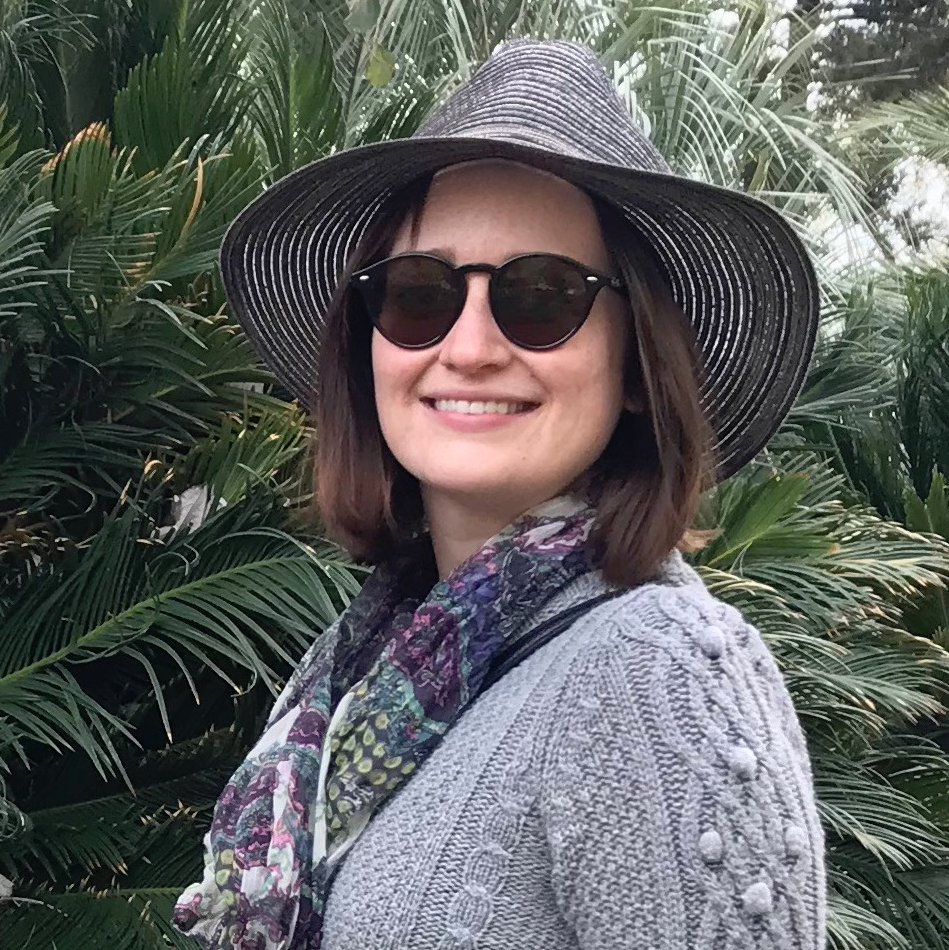
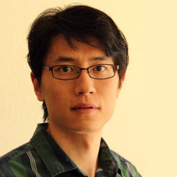
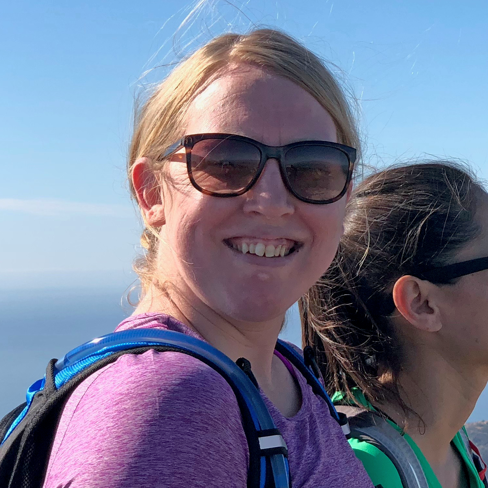
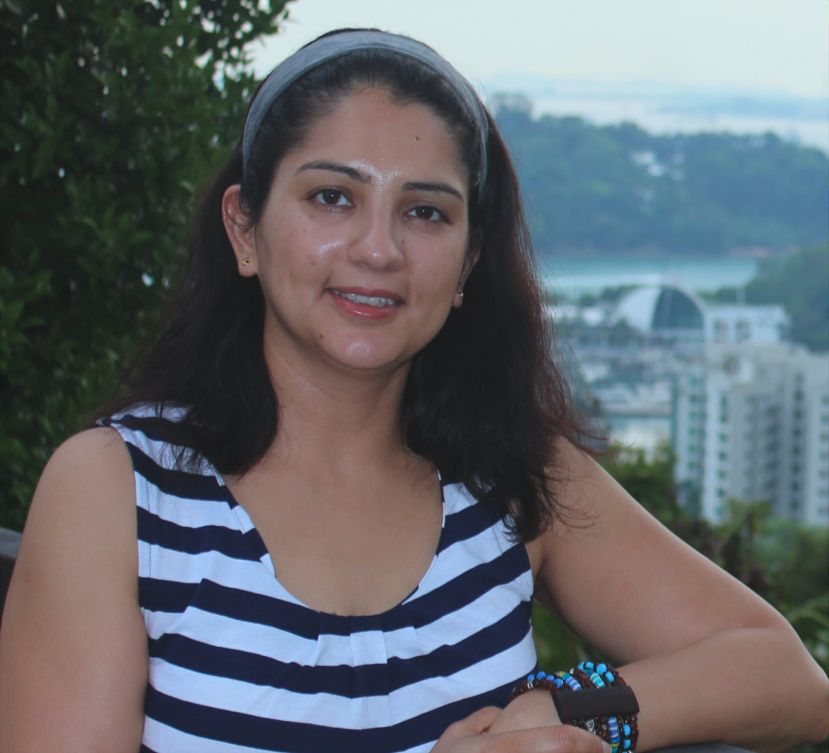
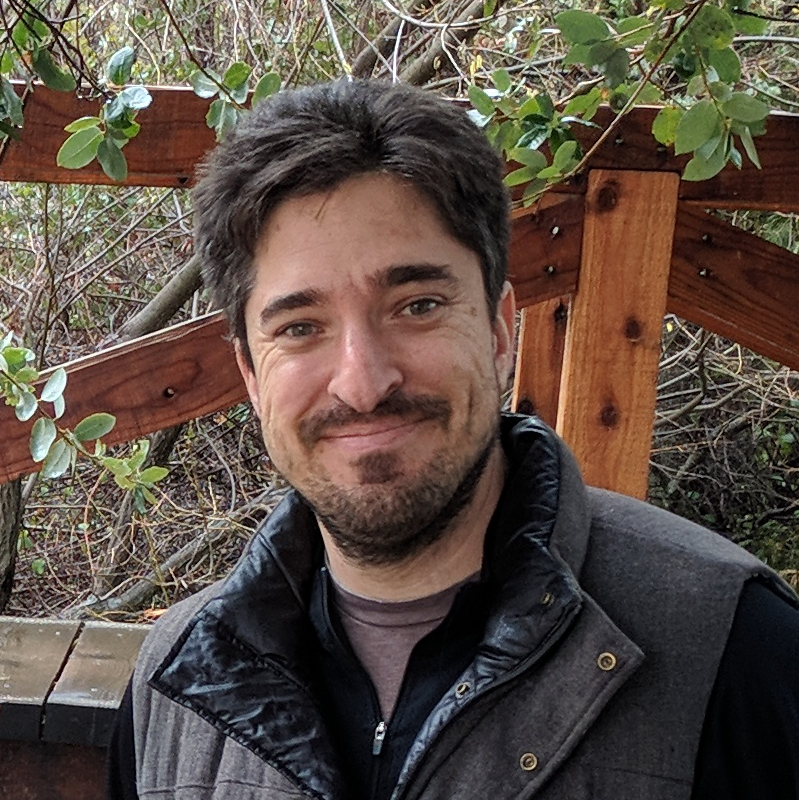
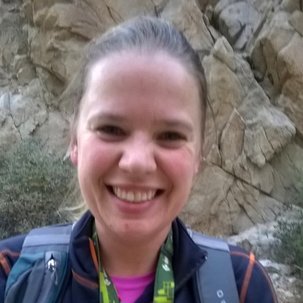
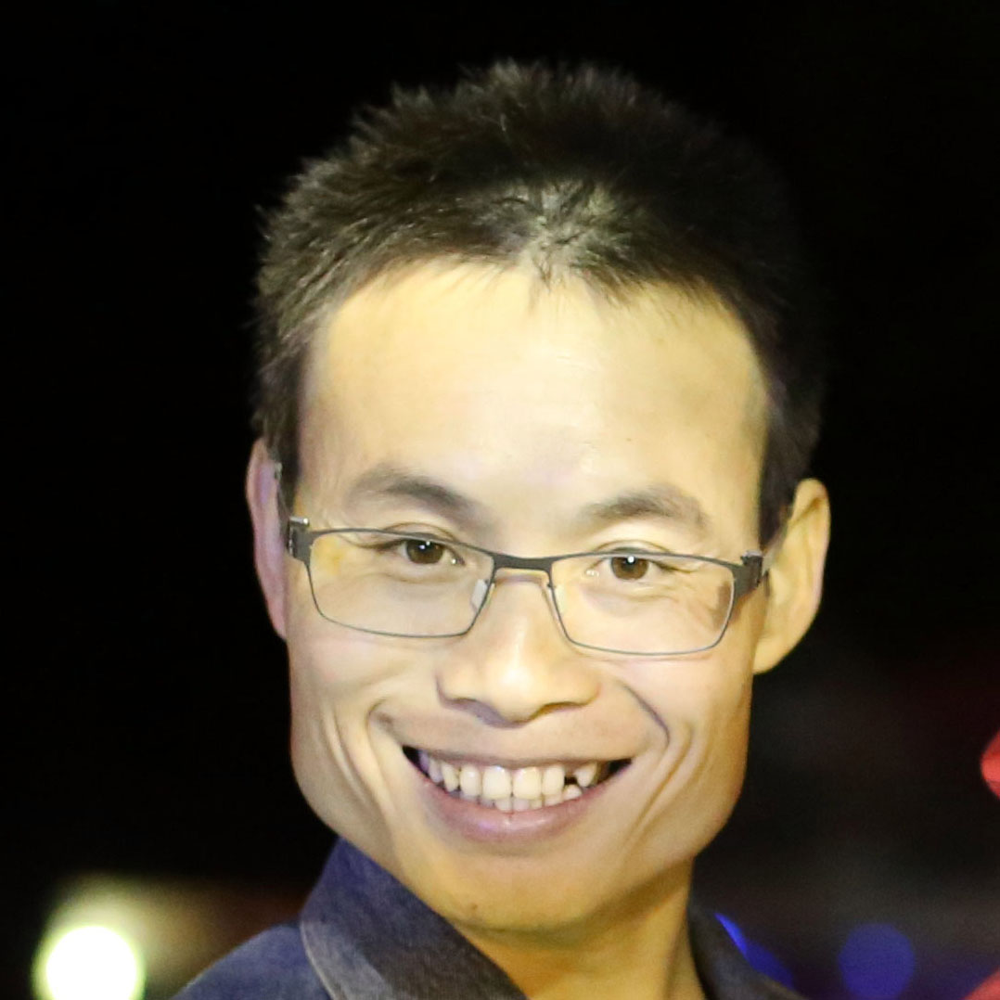
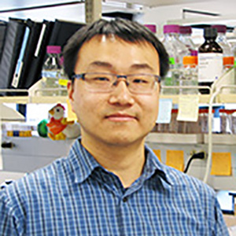

5th Annual CEPCEB Postdoc Symposium
Dear IIGB community members,
On behalf of all members of the organization, we want to thank you for attending the 5th Annual CEPCEB PostDoc symposium on June 1, 2018.
We would like to take this opportunity to express our great appreciation to all the speakers for their excellent presentations and posters and for sharing their exciting research. Your presence helped to make this event a great success. We wish you all the best and hope that this event may help further new ideas, cross-pollination, and enhance the great ongoing science here at UCR.
Our special thank you to Professor Dr. Steve Kay for his inspiring talk. Our sincere gratitude and appreciation to Director Dr. Julia Baley-Serres for all the support and suggestions in the organization of this symposium. Many thanks as well to our excellent staff who were essential and generous with for their help and time: Aimee Gonzalez, Jennifer Douglas, and Aurelia Espinoza.
Sincerely,
Organizing Committee
Speakers
-

Steve A. Kay, Ph.D., D.Sc.
Director of Convergent Biosciences. Provost Professor of Neurology, Biomedical Engineering and Biological Sciences
-

Xiang Zhou
Dr. Xiang Zhou obtained his B.S. Degree at China agricultural University in 2010 and completed his M.S. and Ph.D. Degree at Shanghai Institute of plant biology and Ecology, Chinese Academic of Science in 2016. Then he joined Dr. Yang’s lab at UCR in Oct. 2016.
-
Alison Mills
Alison Mills is a second year PhD student in the UCR Biochemistry and Molecular Biology Department. She works in the Rasmussen lab investigating cell division orientation in Arabidopsis and maize. She received her undergraduate degree in biochemistry and molecular biology and a Masters in biotechnology from the University of California, Irvine. Her current research investigates the function of the division plane marker, TANGLED1, in Arabidopsis, and the role of the microtubule severing protein, KATANIN, in cell division in maize. Outside of lab, her interests include reading science fiction and tabletop roleplaying games.
-

Kelley Clark
I’m a 4 th year PhD student in the Microbiology program studying in Dr. Wenbo Ma’s lab. My PhD studies are on the currently, most devastating disease of citrus, Huanglongbing. I’m originally from Arizona, where I attended the University of Arizona and received my Bachelor’s degree in Plant Biology. My interests in the biological sciences began when I was a child as many of my family members are also in the Agricultural field. In my free time I enjoy hiking, painting, and being with my cat.
-

Wiphawee Leesutthiphonchai
Wiphawee is a fourth year PhD Candidate in Plant Pathology program working under supervision of Dr.Howard Judelson. Her research focuses on a transcription factor involved in sporulation of the plant pathogen Phytophthora infestans. Her work helps to understand how the transcription factor regulates sporulation, which is a key stage for spore formation and plant infection.
-

Jiang Li
Jiang is a postdoc in Dr. Nair’s Lab in UCR School of Medicine. He received his PhD degree from Fudan university in China. He works in Nair Lab and focus on the function of human Resistin protein in inflammation. They found that human Resistin decreases the pro-inflammatory cytokines by binding to Toll-like receptor 4. This binding blocks TLR4 signaling in immune and inflammatory cells when challenged by Lipopolysaccharide.
-

Christi Ann Scott
I am a graduate student in the Cell, Molecular, Developmental Biology program interested in understanding gene expression changes in the nervous system after sensory stimulation. Working in the lab of Dr. Anand Ray, our research focuses on the genes that are altered in Drosophila after short- and long- term exposure to odorants. I am interested in understanding how these genes are regulated and how their expression is altered with aging. In addition to research, I am passionate about teaching and science outreach.
-

Poonam (Sonia) Deol
I completed my Bachelor’s degree from Punjab Agricultural University (India) with a major in Food Science and Technology. I moved to the U.S. for my MS degree in Food Science at Iowa State University and subsequently earned my PhD in Biomedical Sciences under the mentorship of Dr. Christian Lytle at UCR. I am currently working as an Assistant Project Scientist in the lab of Dr. Frances Sladek where my research is aimed at determining the dietary factors involved in the development of metabolic and intestinal diseases and understanding their mechanism of action.
-

Ryan Joseph
Ryan began studying insects as an undergraduate researcher at the University of California, Berkeley, where he conducted biochemical experiments testing a new mutagenesis technique in Drosophila melanogaster. After graduating, he attended graduate school at the University of California, San Francisco, where he began studying the neurons that mediate insect behaviors, with the goal of understanding how agricultural pests interact with their environment and ultimately select locations for egg-laying, foraging, and feeding. Specifically, under the guidance of Dr. Ulrike Heberlein, he investigated competing egg-laying and feeding preferences in Drosophila for ecologically-relevant chemicals that are present in fermenting fruits, and his findings helped establish egg-laying site selection as a model for decision making in Drosophila. After receiving his Ph.D., Ryan continued to study the neural basis of insect feeding behaviors during his postdoctoral fellowship at Yale University. Under the supervision of Dr. John Carlson, he identified a critical neuron in the Drosophila pharynx that expresses a unique taste-receptor not present elsewhere in the fly. Surprisingly, he discovered that although this neuron is responsive to sugars like sucrose, activation of this sweet-sensitive cell leads to the suppression of consumption, rather than the promotion of feeding. These findings demonstrated a new type of circuit logic in how insects inhibit feeding behaviors. Upon completion of his fellowship, Ryan subsequently joined Dr. Anupama Dahanukar’s laboratory at the University of California, Riverside, where he has continued his investigations into feeding suppression in Drosophila, in order to better understand neural pathways that could lead to advances in the control of environmental and agricultural insect pests.
-

Maureen Hummel
After I got my MSc diploma from Wageningen University, Wageningen, Netherlands I started as a graduate student at Utrecht University, Utrecht, Netherlands. In the group of Prof. Dr. Sjef Smeekens I studied post-transcriptional gene regulation in response to carbon availability in Arabidopsis. I investigated the sucrose-induced repression of translation (SIRT) mechanism on the bZIP11 mRNA and changes in ribosome heterogeneity in response to a high sucrose treatment. In May of 2011, I became a postdoctoral scholar in the group of Dr. Julia Bailey-Serres at UC Riverside. As post-doctoral scholar I was involved in the Arabidopsis 2010: Deciphering mRNP Networks project in which we studied the role of under characterized or uncharacterized RNA binding proteins in post-transcriptional gene regulation in Arabidopsis in response to abiotic stresses. Although most of my studies I have performed in Arabidopsis, more recently as an assistant project scientist, I got involved in different projects that study post-transcriptional gene regulation in different plant model species such as rice and maize. At the symposium I will present my studies on how a plant balances translation and sequestration of mRNAs in response to energy availability.
-
Qiang Cai
I joined in Professor Hailing Jin's lab after I got my Ph.D. at 2014 from Shanghai Jiaotong University. I am working on plant extracellular vesicles and sRNA trafficking in plant immunity.
-

Bailong Zhang
I joined in Professor Xuemei Chen's lab after I got my Ph.D. at 2014 from Fudan University. I am working on plant microRNA and siRNA metabolism.
-

Yongjian Qiu
My name is Yongjian Qiu. I got my B.S. degree from University of Science and Technology of China (USTC) in 2006. In the same year, I started my graduate studies in the Department of Horticulture and Landscape Architecture at Washington State University, Pullman, WA. My graduate research in Dr. Joe Poovaiah's laboratory focused on functional characterization of calcium- and calcium/calmodulin-binding proteins in plant defense against abiotic and biotic stresses. I got my Ph.D. degree in July 2011 and subsequently I joined Dr. Meng Chen's laboratory as a Postdoctoral Associate in the Department of Biology at Duke University, Durham, NC. I continued my research as an Assistant Project Scientist in Dr. Meng Chen's laboratory after the lab moved to University of California, Riverside in late 2015. My project in Dr. Meng Chen's laboratory focuses on understanding the detailed mechanism of phytochrome signaling in regulating light- and temperature-mediated plant growth.
Posters Presentation
Schedule
| Time | Slot | Title |
|---|---|---|
| 3:25 PM |
Steve A. Kay, Ph.D., D.Sc.
University of Southern California
|
Grow Up! The Circadian Clock as the Master Regulator of Plant Environmental Responses |
| 8:30 AM | Registration and Breakfast | - |
| 9:00 AM | Opening Remarks - Daniela Cassol, Postdoc | - |
| 9:10 AM | Xiang Zhou Postdoctoral Researcher | The invasive growth, “Male-female interaction during pollen tube penetration”. |
| 9:30 AM | Alison Mills Graduate Student | It Takes Two: TANGLED1 and AIR9 are Both Required For Proper Division Plane Orientation in Arabidopsis thaliana. |
| 9:50 AM | Kelley Clark Graduate Student | An effector from the Huanglongbing-associated pathogen targets a class of proteases in citrus. |
| 10:10 AM |
Wiphawee Leesutthiphonchai
Graduate Student
|
Transcriptional networks controlling sporulation of Phytophthora infestans: towards saving potato from late blight. |
| 10:40 AM | Coffee Break | - |
| 11:00 AM | Jiang Li Post-Doctoral Fellow | Resistin therapeutics in Lipopolysaccharide induced sepsis. |
| 11:20 AM | Christi Ann Scott Graduate Student | A whole-genome approach highlights age- and stimulus- dependent differences in neuronal response to sensory cues in Drosophila. |
| 11:40 AM | Poonam (Sonia) Deol Assistant Project Scientist | Soybean Oil Induced Health Effects: Liver, Gut and Brain. |
| 12:00 PM | Ryan Joseph Project Scientist | Employing Drosophila melanogaster to uncover fast-acting neural mechanisms that inhibit insect feeding. |
| 12:30 PM | Lunch Break | - |
| 1:30 PM | Maureen Hummel Assistant Project Scientist | Balancing translation and sequestration of mRNAs to maintain energy homeostasis. |
| 1:50 PM | Qiang Cai Postdoctoral Researcher | Plants secrete extracellular vesicles to deliver small RNAs into a fungal pathogen to silence its virulence genes. |
| 2:10 PM | Bailong Zhang Postdoctoral Researcher | Linking Key Steps of Plant miRNA Biogenesis by TREX-2 and the Nuclear Pore Complex |
| 2:30 PM | Yongjian Qiu Assistant Project Scientist | Mechanism of phytochrome-mediated thermomorphogenesis. |
| 3:00 PM | Coffee Break | - |
| 3:20 PM | Keynote Speaker Introduction - Dr. Dawn Nagel | - |
| 4:25 PM | Closing Remarks - Patricio Pérez-Henríquez, Postdoc | - |
| 4:30 PM | Poster session with Refreshments | - |
Location
Genomics Auditorium. Riverside, California
Sponsors
Previous Events
Organizing Committee
If you have any questions about the Symposium then please contact us.
ChanYul Yoo (Postdoc at Meng Chen Lab)
Daniela Cassol (Postdoc at Thomas Girke Lab)
Matthew Prior (Postdoc at Julia Bailey-Serres Lab)
Patricio Perez Henriquez (Postdoc at Zhenbiao Yang Lab)